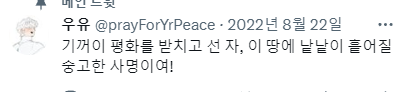

원래는 움직이는 강아지... 자베 닮았다고 보여주려고
만든 거였는데^^.... 강아지만 있으면 심심할 것 같아서
배경도 한 번 넣어봤습니다....
별거 없긴 하지만 자베가 그저 즐거웠으면 하는 마음....
사이버 이모가 늘 응원하고 있습니다 자베...!
다가오는 주말 푹 쉬고 매일 행복하길 바라....
ps. 배경을 누르면 강아지가 달려옵니다!
견고한 심장을 가지고 있는 건강 쿠키.
우유의 가호!
덕질도 건강하게... 최고^^....
원래는 움직이는 강아지... 자베 닮았다고 보여주려고
만든 거였는데^^.... 강아지만 있으면 심심할 것 같아서
배경도 한 번 넣어봤습니다....
별거 없긴 하지만 자베가 그저 즐거웠으면 하는 마음....
사이버 이모가 늘 응원하고 있습니다 자베...!
다가오는 주말 푹 쉬고 매일 행복하길 바라....
ps. 배경을 누르면 강아지가 달려옵니다!